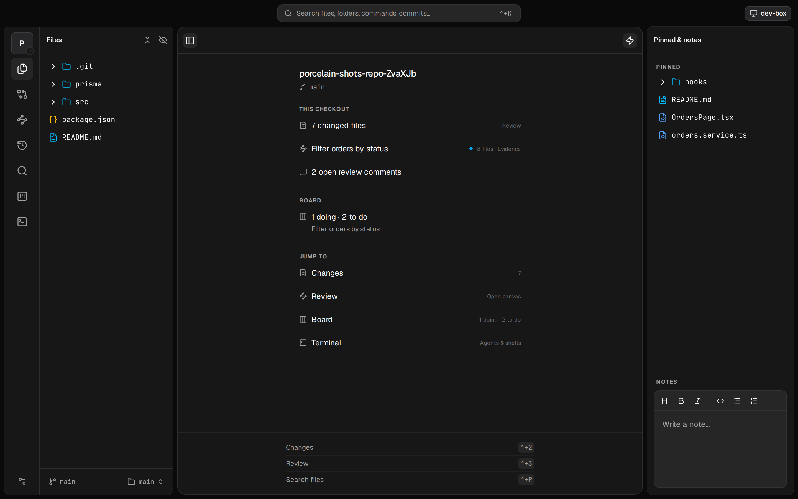

The review layer for agentic coding
Where agent work
becomes trusted work.
Everyone is racing to spawn more agents. Porcelain stands on the other side of the pile: a place to focus and review, not another place to run everything. Your agents keep running where they already run. Porcelain is where you review what they built as a story, not a file list. On your Mac, or any browser.

Why Porcelain exists
Agents write the code now.
Reading it is the job.
Coding agents generate faster than anyone can trust. The pile of unreviewed diffs just grows. The tools around agents still assume writing is the hard part. It is not.
Editors
Built for authoring: LSP, extensions, refactors. Heavy when you only need to read, annotate, and decide.
Git GUIs
Diffs as an alphabetical list of files, with no sense of how a change actually runs through your stack.
Agent cockpits
Race to spawn more agents in more worktrees. The pile grows. None of them help you trust what came out.
Porcelain is the fourth path: a review companion. Not an editor. Not an agent host. Agents publish into it. You read, comment, and sign off. They resolve. That loop is why it exists.
What you download it for
The moat is review depth and a real agent loop. Everything else supports that.
The Review
Intent, Execution, Evidence for every unit of work. A document your agent authors, not a dump of every dirty path.
Flow for your repo
Changes grouped by agent-managed layers for this tree. Not a fixed React stack. Entry point toward data.
Two-way loop
Comments become agent context. Resolutions come back. Board, layers, hide/pin: agents connect to the product.
Focus
Hide what you will never touch. Pin what you live in. Large trees stay fast: nothing indexed until you open it.
Anywhere
Share over LAN or Tailscale. Mac app, remote window, or any browser. Terminals and review state stay on the host.
Companion
Keep the tools you already prefer. Run any agent CLI next to the review, or outside the app. Same Review either way.
The Review
The home for a unit of work.
From first Intent to sign-off.
Your agent does not just hand you a diff. It publishes the Review: the one active story for this repo (feature, bug, chore, investigation). You read a document. You mark files reviewed. You clear when the unit is done.

Intent
What is this, and what's the idea? Thesis and walkthrough prose. Optional freeform board when the shape of the idea needs space.
Execution
What did the agent touch, and is the code right? Only the files it listed, in the order the change runs, with notes. Includes unchanged code a plain diff would hide.
Evidence
Did it actually work? Proof the agent verified its own work: HTML, checks, screenshots. Not a claim without a trail.
Agent-shaped flow
Changed files, ordered for how your change runs.
Even without a published Review, the Changes tab groups the working tree along flow layers. Those layers are not a fixed stack (no assumed components → hooks → routes). Your agent learns how this project is laid out and groups entry-point toward data. Alphabetical is never the real story.
- Per-repo layers, agent-managed through the companion skill
- Unified or split diffs, with per-file staging
- Mark files reviewed as you work through them

The human ↔ agent loop
Agents actually connect.
Not just run nearby.
Most harnesses host an agent and stop there. Porcelain is the product agents write into and read back from: Review, comments, board, layers, hide/pin. On machines you control. No account. No telemetry.

Comments as context
Tell the agent exactly what you need.
Select a line range or right-click a file. Leave a note. Comments travel as review context so it fixes the right thing and marks each one resolved.
- Line range or whole-file comments
- Notes sync to the agent; resolutions sync back
A board your agent drives
Plan in the same window you ship from.
A per-repo To Do / Doing / Done board. Agents read it and move cards as they work. Queue the next job without spelling every step in conversation. Board is the queue; Review is the one active story.
- Agents pick up cards and mark them done
- Same board for you and every agent on the repo
- Local files only. Nothing leaves your machine

Focus
Hide what you will never touch. Pin what you live in.
Works on large repos and monorepos alike. Right-click to hide a folder: it dims and stops loading. Pin the paths you care about. Your agent can set that up for you. Nothing is indexed until you open it.
- Hidden folders dim out and stop loading
- Pin files or folders to the workspace
- Agent-managed via the companion skill

Anywhere is the same place
Share over LAN or Tailscale.
Same client everywhere.
Run the daemon on the machine that holds your code: a home server, a Linux box, a cloud VM. Open from the Mac app, a window pointed at that host, or any browser (including on a phone). Terminals and review state live on the host, so reloads and reconnects pick up where you left off.
Local app
Native macOS app on a local daemon. Full chrome, auto-updates, the everyday seat.
Remote environment
Point a window at a saved remote. Per-window: local monorepo in one window, remote power in another.
Any browser
The same client the app ships, served by the daemon. Start when you work, Ctrl+C when done.
Terminal next to review
Keep your agents. Sit them next to the Review if you want.
Porcelain does not host agents of its own. Run yours in the terminal you already use, or in the one embedded here. On a remote environment you can open shells on the host and on This device, and each saved Action chooses which side it runs on.
- Your CLIs, your subscriptions. No second auth stack
- PTYs survive reconnects and follow you across devices
- Actions: agent curates, only you run

Also in the window
Useful. Not the reason you switch.
Ship without leaving the seat. Search and history when you need them. Still not an IDE: autocomplete, rename, and multi-file refactors stay in your real editor.

Finish where you read
Stage, commit, and push in place.
When the read is done, finish the job without bouncing to another app. Conventional-commit chips, suggested commands, open comments still in view. Nice when you live in the Review. Not the moat.

Files, folders, saved commands, and commits in one bar.

Full messages, then open the diff behind any commit.
Install
Two minutes to your first Review.
Step 01
Download Porcelain
macOS on Apple Silicon. Auto-updating. No account. No telemetry. Free forever. On any other device, you don't install it: run the daemon and open a browser.
Step 02
Connect your agent
Teach your agents the Porcelain workflow with one companion skill. Global install so every project sees it:
Or skip both
Open it in a browser
Run the daemon on any machine you own. Every device with a browser becomes a client.